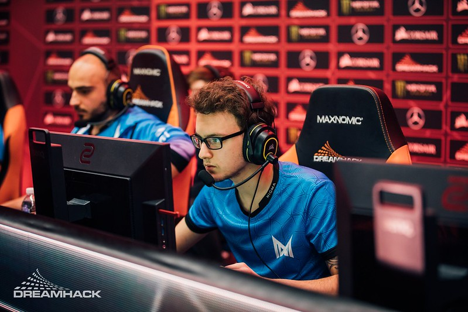

|  | Name | Amer "Miracle-" Al-Barkawi |
|---|---|---|
| Born | June 20, 1997 | |
| Nationality | Jordan | |
| Occupation | Professional Dota2 Player | |
| Years Active | 2013 | |
| Team | Nigma Galaxy | |
| Current Role | Carry,Solo Mid |
Amer was born to a Polish mother and Jordanian father. He holds dual citizenship.
Miracle- joined Balkan Bears at the beginning of 2015, only to be removed from the team about four months later. While he was teamless, he began gaining recognition in the European scene by climbing the matchmaking rating leaderboards in pub games. Miracle- eventually became the #1 player by MMR in the European division After achieving the #1 MMR ranking, he was invited by N0tail to join (monkey) Business, a new team formed from the post-TI5 reshuffle to compete in the upcoming Majors. The team reformed as OG after being sponsored. OG qualified for the first ever Dota 2 Major, the Frankfurt Major and managed to win the tournament in an unexpected series of upsets, with Miracle- showing high level performances on Shadow Fiend throughout the tournament. His impressive abilities prompted many other teams to respect ban the hero. After the Frankfurt Major, Miracle- later won numerous tournaments with OG during mid 2016, such as DreamLeague Season 5 and ESL Frankfurt 2016, while also claiming his second Valve Major win at the Manila Major. Despite OG being one of the favorites for winning The International 2016, they exited early in the tournament, losing to TnC Gaming in the second round of the lower brackets at the main stage, marking one of the biggest upsets in Dota 2 history.
| Date | Place | Tier | Tournaments | Prize |
|---|---|---|---|---|
| 2018-06-10 | 1st | Tier 1 | China Dota2 Supermajor | $555,000 |
| 2017-08-12 | 1st | Tier 1 | The International 2017 | 10,862,683 |
| 2016-06-19 | 1st | Tier 1 | ESL One Frankfurt 2016 | $157,273 |
| Name: | |
| Email: | |
| Comment: | |
minnthantmtk8@gmail.com | ©All Right Reserved.
By Caro